Hi, I'm Yannis.
I design through curiosity.
UI/UX & Interaction Designer
THE EYES ARE WATCHING YOU...
WHAT I’VE BEEN EXPLORING...
Selected Works
Beyond the work...

Hi again, I'm Yannis.
I'm an interaction designer who enjoys exploring the space between people, technology, and everyday experiences.
Beyond design, I'm inspired by nature, making things by hand, and discovering new perspectives.
MORE ABOUT ME ↗